Ultrahuman Home
Applicable Regions: Global
Related Tags:
Home_FAQ- Any technical, usage-related, or product-related questions asked by the user about Ultrahuman Home.Home_enquiry- Queries related to the purchase of Ultrahuman Home, including pricing, availability, or purchase-related doubts.Home_app_usage- Questions related to how to use Ultrahuman Home, app navigation, feature guidance, or understanding in-app Home data.
Overview
Ultrahuman Home addresses the often-overlooked aspect of the living environment in the overall health stack.
The sleek yet powerful device provides insights into your external environment - including exposure to artificial & natural light, air quality, humidity, and noise levels.
Personalising or adjusting these markers based on recommendations from Ultrahuman Home helps improve the passive environmental factors that influence overall health. Passive markers like PM, CO₂, and temperature are especially important because their impact compounds over time.


What does the package contain?
- Ultrahuman Home
- Charging Adapter
- USB-C Cable
- Type A, C, G, I Plugs
- Welcome Card
- Getting Started Booklet
- How to Use Charger
- Safety and Precautions Card
Product Specifications
- Crafted from anodised aluminium — silent, durable, and designed to blend seamlessly into any space.
- Weight: 540 g (19 oz)
- Dimensions: 120 × 120 × 46 mm
- Stores up to 6 days of data without app sync (with Wi-Fi connection).
- Compatible with iPhones (iOS 15+) and Android (v6+).
- Available in a single color variant.
- Not water-resistant — avoid moisture, spills, and condensation.
- Wi-Fi range: 20 ft | Bluetooth range: 8 ft
- Power consumption: 2W
- ESD-Safe: device will not give electrostatic shocks.
- EMF-Safe: CE and FCC certified.
- Sensors Included: CO Sensor, Humidity Sensor, Noise Sensor, Temperature Sensor, PM Sensor, CO₂ Sensor, RGB Sensor, Dual Microphone.
Privacy
All audio processing occurs locally on the device, ensuring user privacy.
The Home includes a physical mic cut-off switch for complete control.
Best Practices
- Optimal Placement: Ideally place on your bedside table for best insights.
- Stable Surface: Ensure it’s flat, stable, and away from children/pets.
- Indoor Use Only: Operate within –10°C to 60°C; avoid moisture & extreme conditions.
- Avoid Interference: Keep away from microwaves, routers, strong magnets.
- Ventilation: Do not place in closed or flammable enclosures.
Cleaning & General Care
- Clean using a soft, dry/slightly damp cloth. Avoid abrasive materials & chemicals.
- Do not open or disassemble. Contact Support for repairs.
- Keep away from live electrical circuits or metallic objects.
- Periodically check cables, cleanliness, and surroundings for safety or performance issues.
Features & Functionalities
Ultrahuman Home helps you optimise your environment using four core scores:
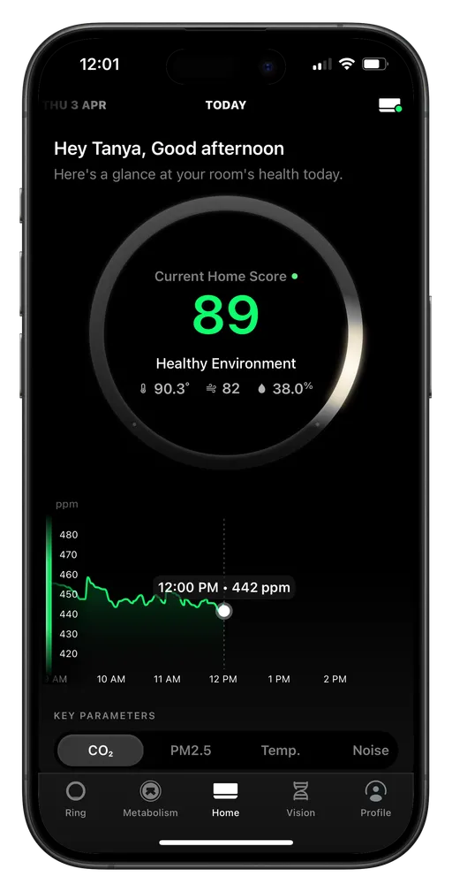
Air Quality Score
Tracks pollutants that impact health and comfort:
- Formaldehyde (HCHO): Emitted from furniture/materials; causes irritation.
- Carbon Monoxide (CO): Odourless; harmful at elevated levels.
- Carbon Dioxide (CO₂): High levels cause drowsiness & poor ventilation.
- Particulate Matter (PM1.0, PM2.5, PM10): Dust, smoke, etc.—affects respiratory health.
- VOCs: Chemicals from paints, sprays, cleaners.
Ultrahuman Home offers insights to help maintain cleaner indoor air.
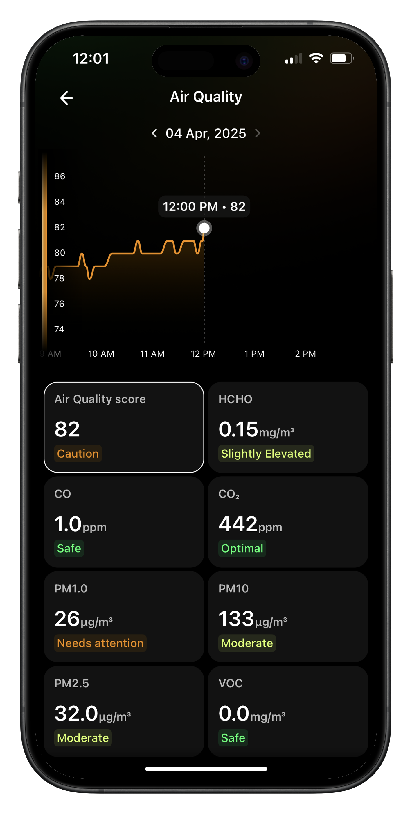
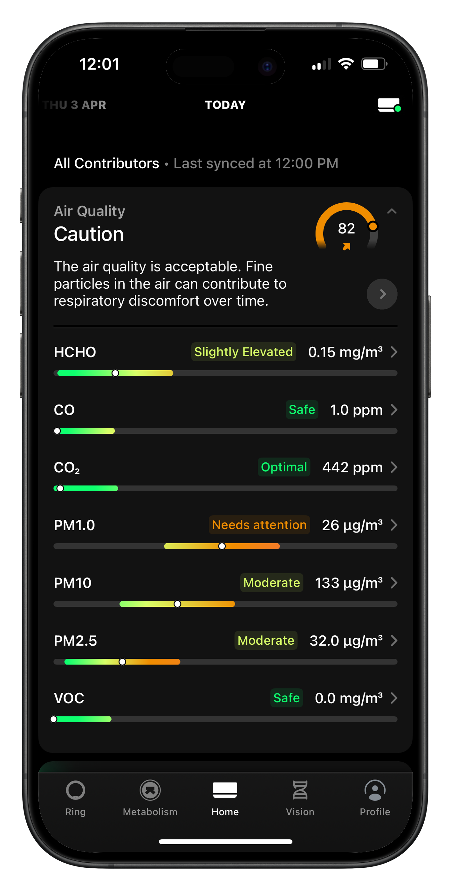
Environmental Comfort Score
Monitors markers that affect comfort:
- Temperature: Adjust for ideal comfort.
- Humidity: Supports respiratory health & skin comfort.
- Noise: Helps maintain a calm, restful environment.
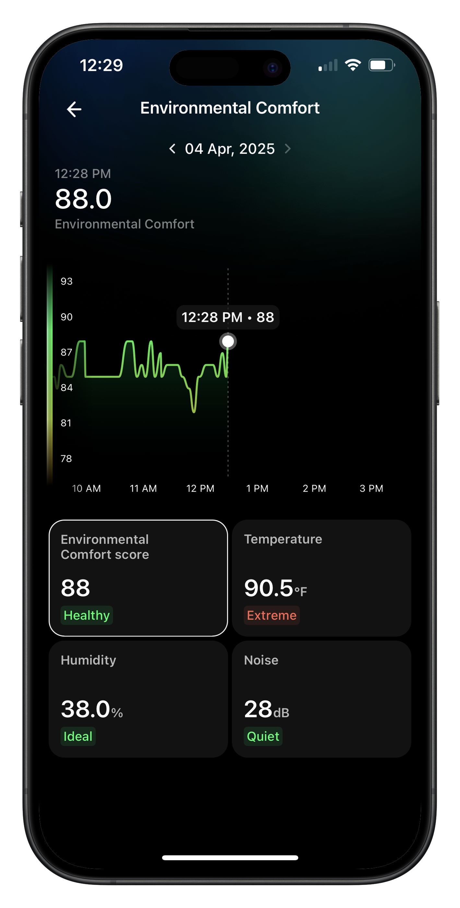
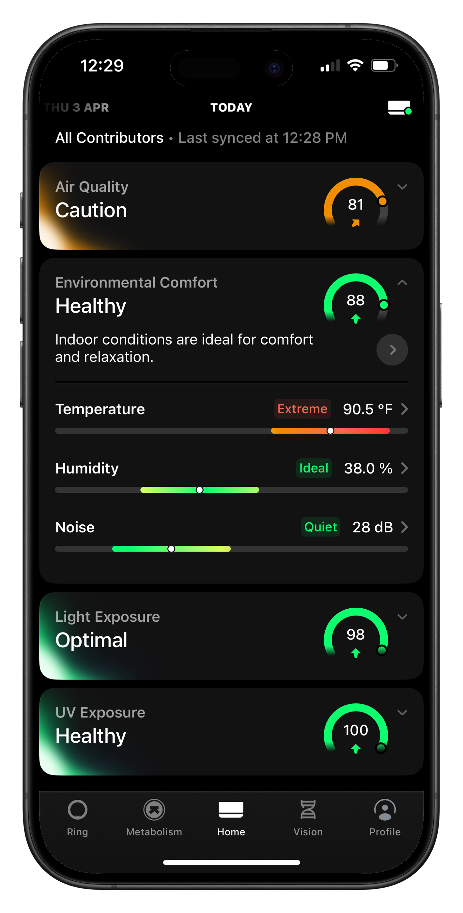
Light Exposure Score
Tracks spectrum exposure to support circadian rhythms.
- Blue Light: Good for daytime alertness; avoid at night.
- Red & Green Light: Support relaxation and mood.
- Infrared (IR): Adds warmth without disturbing circadian cycles.
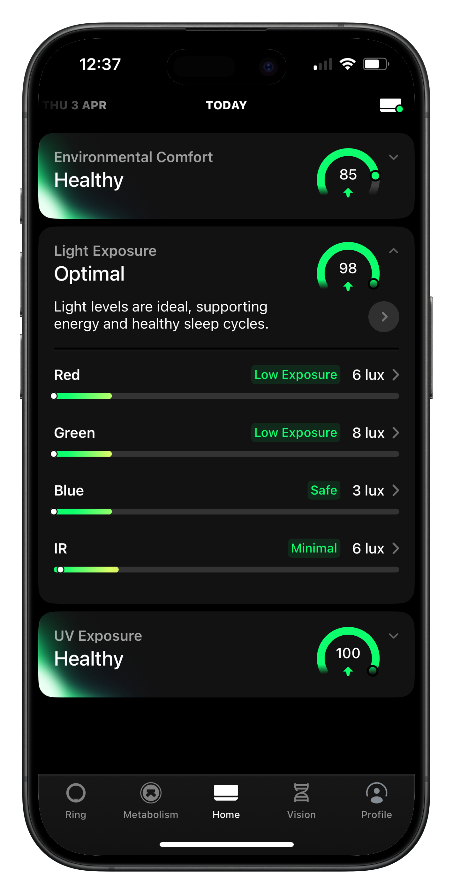
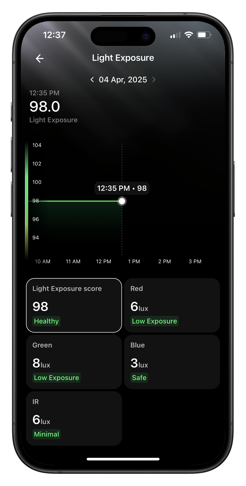
UV Exposure Score
- UVA/UVB: Helps Vitamin D synthesis; balance is necessary.
- UVC: Useful for air sterilization; monitor to avoid overexposure.
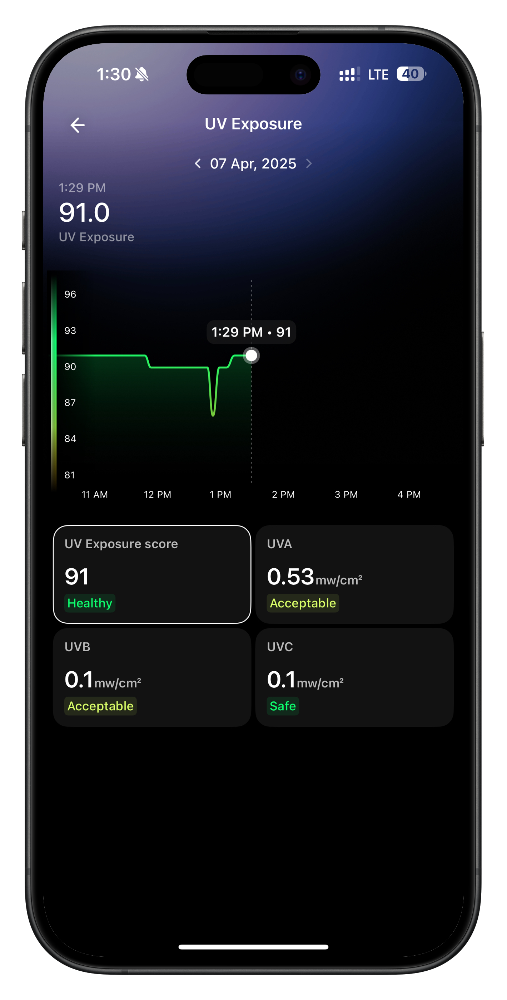
Notifications
Ultrahuman Home integrates environmental data (air quality, humidity, temperature) with personal wellness markers (sleep, stress) via the Ultrahuman Ring AIR.
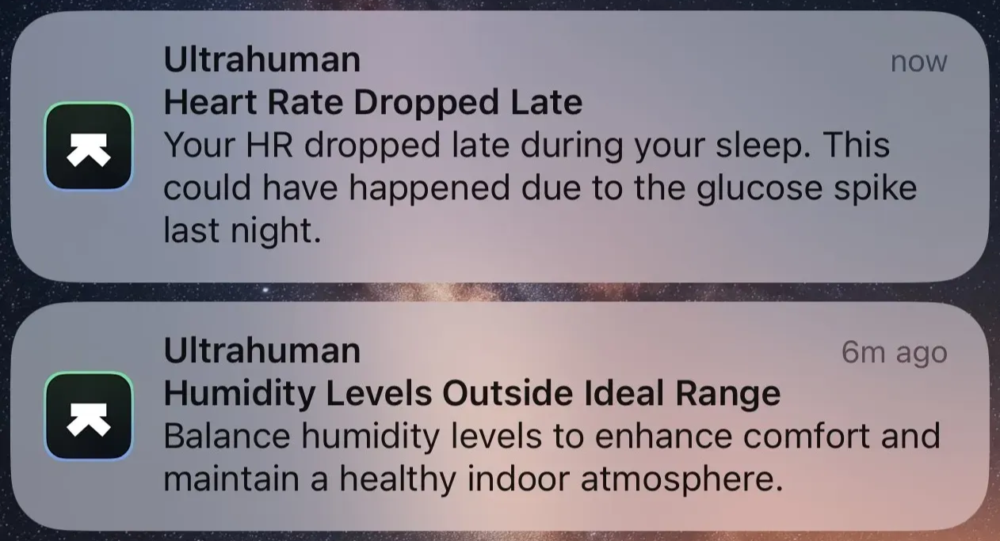
Experiments for Your Home
- Burn scented candles → track VOC & PM2.5 changes.
- Add air-purifying plants → observe CO₂ & VOC levels.
- Test grooming sprays → monitor VOC spikes.
- Ventilate room in morning → track impact on CO₂, VOC, PM.
- Use soy/beeswax candles → compare cleaner burns.
- Add/remove humidifier → observe humidity score shifts.
- Cook with/without exhaust → compare PM2.5 & VOC levels.
- Try natural cleaners → observe VOC reduction.
- Clean bedroom → measure PM drops.
- Use air purifier overnight → see pollutant reduction.
Upcoming Features
- Marker ranges by location & time of day
- Sleep Apnea Detection
Media Kit
Pricing
- Ultrahuman Home Price: USD 550, ₹54,999 INR, €489 EUR, AED 1,999
- No subscription required
- Shipping charges vary by region
- Import taxes & duties may apply depending on your country
Warranty
The Ultrahuman Home comes with a 12-month warranty covering internal electronics and sensors, excluding mechanical or accidental damage.
This warranty ensures that any defects or malfunctions occurring within the coverage period are promptly assessed and resolved, giving you peace of mind with your purchase.
For full details, please refer to the Terms of Sale.
Troubleshooting
Applicable regions: Global.
Related tags: Home_incorrect_data
LED indicators on Ultrahuman Home — what they mean
Ultrahuman Home uses coloured LED lights to convey device status, connectivity, and update progress.
White LED — Setup mode / network reset
The device is either new or has re-entered setup mode.
This means the device:
- Is ready to be activated and connected to Wi-Fi.
- May have outdated or invalid Wi-Fi credentials.
- May have been moved to a location where the saved Wi-Fi is unavailable.
Green LED — Connected & working normally
- The device is connected to Wi-Fi.
- Everything is functioning as expected.
- No action required.
Red LED — Wi-Fi disconnected
- The device has lost Wi-Fi connectivity.
Yellow LED — Server connectivity issue
- The device is unable to reach Ultrahuman servers.
- You may notice missing or delayed data in the app.
Blue LED — Firmware update in progress
- Ultrahuman Home is currently updating.
- Do not unplug or restart the device.
Purple LED — Firmware update failed
- A firmware update attempt has failed due to timeout or connectivity issues.
Troubleshooting by LED colour
White LED — What should I do?
If this is a new device: Follow the in-app setup steps to connect it to Wi-Fi.
If the device was previously set up: The white LED indicates one of the following:
- Invalid or outdated Wi-Fi credentials.
- Device moved to a location where saved Wi-Fi is not available.
Steps to fix:
- Open the Ultrahuman app.
- Tap the Device Icon (top-right on Home Tab).
- Select Switch Wi-Fi.
- Reconfigure Wi-Fi details.
- Ensure your router is stable and within range.
Green LED — What does it mean?
- Your device is connected and operating normally.
- No action needed.
Red LED — What should I do?
Your device is disconnected from Wi-Fi.
Steps to fix:
- Press the power button once to restart.
- Check Wi-Fi range and reposition if needed.
- In the app → Home Icon → Switch Wi-Fi to update network details.
Yellow LED — What should I do?
The device is having trouble connecting to the server.
Steps to fix:
- Verify Wi-Fi strength and stability.
- If the issue persists AND app data is missing:
- Move the device closer to the router.
- Restart using the power button.
- Reconfigure Wi-Fi using Switch Wi-Fi.
Blue LED — What does it mean?
A firmware update is underway.
Steps to follow:
- Keep the device plugged in.
- Do not turn it off.
- Ensure Wi-Fi remains stable.
Purple LED — What should I do?
The firmware update has failed.
Steps to fix:
- Restart the device.
- Ensure it is connected to a stable Wi-Fi network.
- Wait for the update to retry automatically.
Operations
Applicable regions: Global.
Related tags: Home_refund, Home_enquiry, Home_FAQ, logistics_address_contact_update
Availability & shipping information
Availability
Ultrahuman Home is available for purchase through our official website: https://www.ultrahuman.com/home/buy/in/
Shipping timelines
Depending on the destination region, shipments are usually processed within 5–7 business days.
Home order ETA requests
If a user reaches out asking for an ETA on their Ultrahuman Home order, please raise this with Ops → Sarvesh, who is the sole POC for Home order timelines. Like this.
Expedited shipping requests
If a user wants to expedite the shipment, this must also be coordinated directly with Sarvesh, as he handles all Home-related logistics.
Address change requests
If a user needs to update their address and the Home order hasn't shipped yet, you can modify it directly in OMS.
Navigate to Order Management → Home Orders, search using the:
- UHH ID, or
- Purchase email address
Open the order and use the Edit option to update the address.
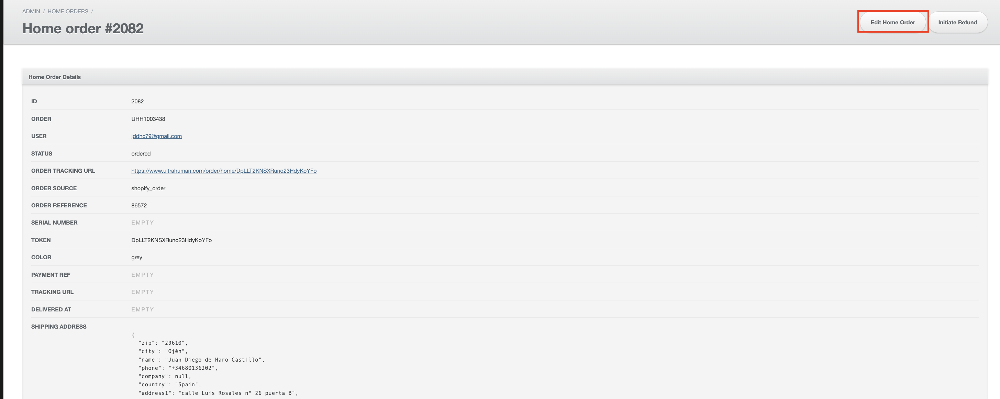
After updating, send a brief heads-up (including the order number) in #cx-ops and tag Sarvesh so Ops can track the change.
Warranty, returns & exchange policies
12-month warranty
Coverage includes electronics and sensors. Mechanical damage is not included.
30-day return window
Eligible users may return Ultrahuman Home within 30 days of delivery.
International duties & fees
When shipping overseas, customers may incur:
- Customs duties
- VAT/GST
- Import taxes
- Clearance fees
These charges are paid by the recipient and vary by country.
Unboxing contents
- Ultrahuman Home device
- USB-C power cable
- Welcome notecard
- Product brochure
Returns & Refunds
Applicable regions: Global.
Related tags: Home_refund, logistics_reverse_pick_up
1. Find the user’s order
Go to Order Management → Home Orders and search for the user using:
Search using UHH ID or purchase email → click View.
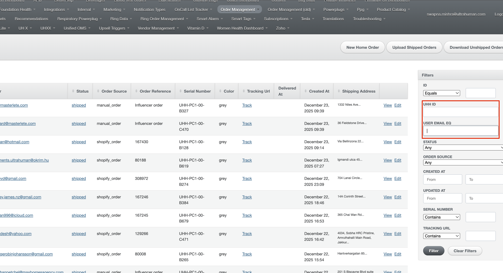
2. Initiate Return-to-Origin (RTO)
Select Initiate RTO (not Request Replacement).
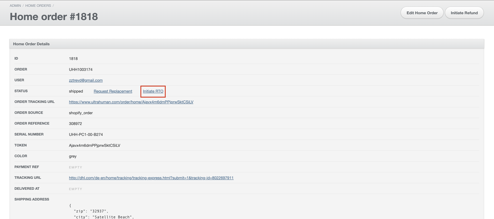
3. Generate pickup labels
Pickup labels must be created based on user region.
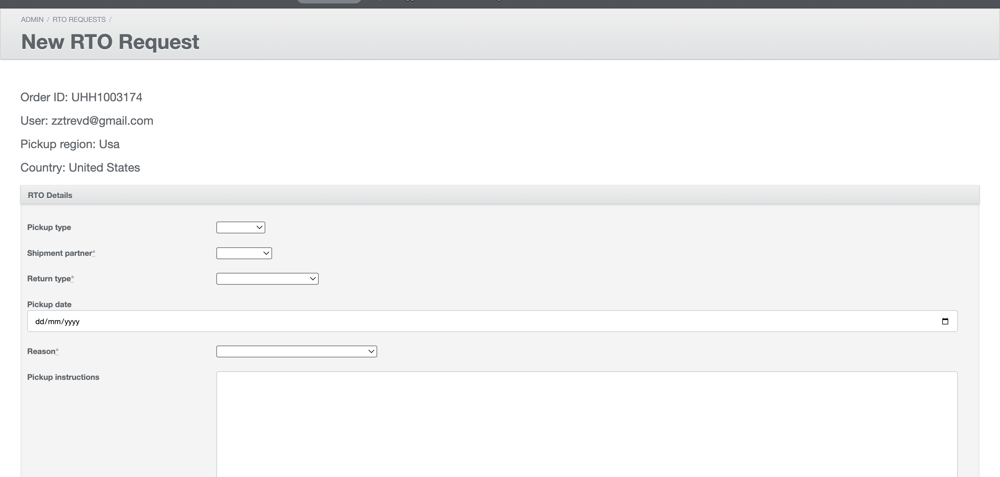
- For international users: Confirm pickup with Moin.
- For domestic users: Confirm pickup with Balaji J.
Proceed only when Ops confirms the Ultrahuman Home device has been received back at the warehouse.
5. Issue refund in OMS
Once pickup is confirmed:
- Open order in OMS.
- Select refund type (Full / Partial).
- Enter return reason.
- Submit refund.
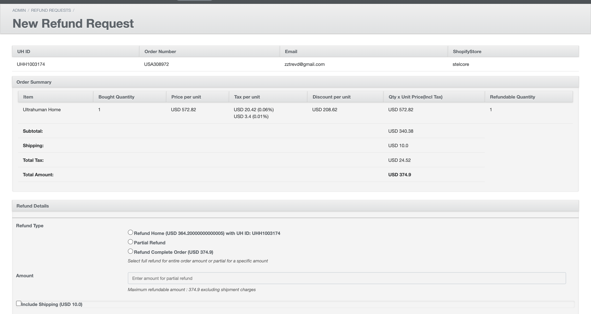
Replacements
Applicable regions: Global.
Related tags: home_refunds, logistics_reverse_pick_up
If a user reports an issue with their device, first flag the case in #support-tech-oncall-requests for validation.
After confirmation, follow these steps:
1. Locate the user’s Home order
Go to Order Management → Home Orders and search for the user using:
- UHH ID, or
- Purchase email address
Enter the details into the search field to pull up the specific Home order.
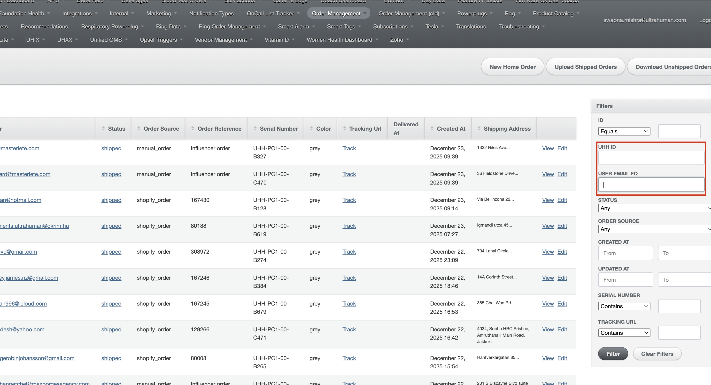
2. Open the order
Click View to access full order details.
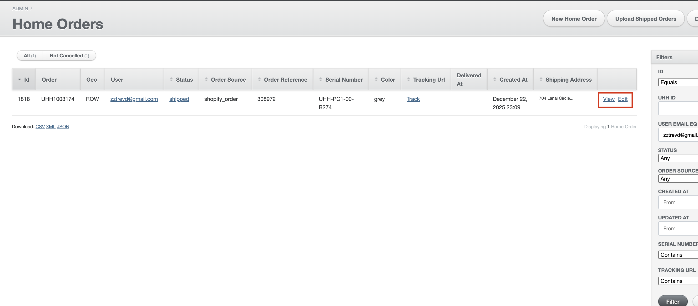
3. Initiate replacement
Click Request Replacement to generate a replacement order.
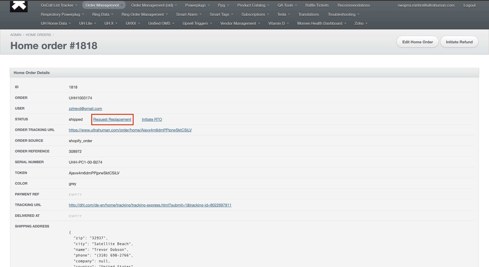
Please note that all Ultrahuman Home devices issued as replacements must be RTO’d. Every replaced Home unit should go through the RTO process.